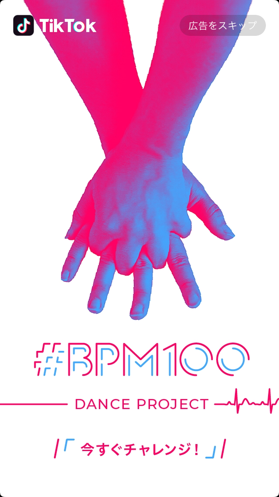

OUR SERVICE AD&ANA 広告・分析
TikTok広告
TikTok広告の代理店による運用代行。
BuzzVideoにも出稿が可能。
TikTok広告の特徴
TikTok広告とは
月間アクティブユーザー950万人（2019年2月）10代の若年層を中心に大流行している動画今日共有アプリTikTokへ広告配信します。

TikTok広告はこんな方におすすめ
- Facebook広告やTwitter広告など一通り広告施策をやっており次の一手を検討している
- ターゲットが10代、20代と若年層である
- Facebook広告やTwitter広告で成果が出ており、更に伸ばしたい
TikTok広告の特徴
TikTokにはアプリ起動画面の広告などの純広告メニューもありますが、運用型広告の特徴を記載していきます。
配信形式
インフィード型の広告で、9:16の縦型フルスクリーンで自動再生される動画を使用します。
「おすすめ」チャンネルに掲載され、動画の長さは5秒〜15秒で、9〜15秒を推奨としています。
「おすすめ」チャンネルに掲載され、動画の長さは5秒〜15秒で、9〜15秒を推奨としています。

可能なターゲティング
OS（Android、iOS）ターゲティング、性別、年齢、時間帯、通信環境、オーディエンス（リターゲティング）言語（日本語、中国語、英語）、地域（都道府県、中国台湾、インド）
というターゲティングが行えます。
今後、類似ターゲティングなどバージョンアップが予定されています。
今後、類似ターゲティングなどバージョンアップが予定されています。

引用元:Facebook Bussiness https://www.facebook.com/business/help/877053729032543
TikTok広告運用をJ・Gripで行うメリット
安いCPCでのウェブサイト誘導が可能
まだ運用型広告がスタートしてから短く、広告出稿する企業も多くありません。
その分安いクリック単価での配信が可能で、ターゲティングにもよりますが、20円を下回るCPCでの出稿も珍しくありません。
トレンドに敏感なF1，F2層へのアプローチが可能
TwitterやInstagramよりもまだ登録ユーザーが少ない分、流行に敏感な層がアプリを使っています。
別のSNSではアプローチできないユーザーにアプローチでき、他の広告施策と組み合わせることで全体的な成果に繋げられます。
動画でターゲットに大きなインパクトを与える
動画広告がメインの配信手法なので配信にあたっては動画が必須です。
動画制作から提案できる当社では、配信の目的に合わせて成果を出す動画クリエイティブをサポートしていきます。